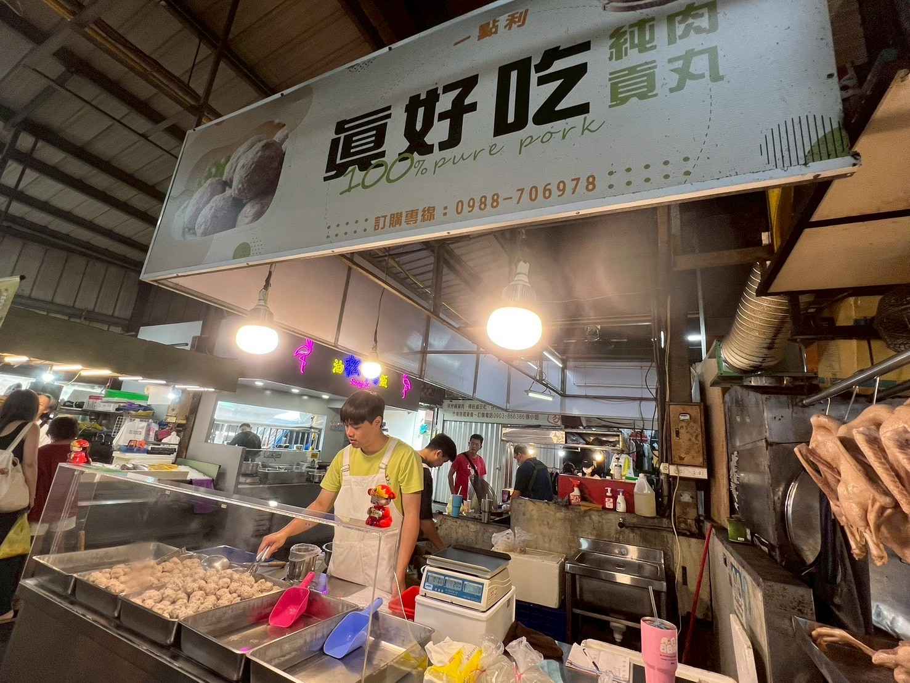

關於我們
在10幾年前，家人在因緣際會下，跟朋友一起合開了這家手工貢丸品牌，從一開始趁年輕努力跑往各個市場，各個早市或是黃昏市場，
甚至跑到南投擺早市，到如今固定在北屯區的新一點力黃昏市場擺攤，經歷了許許多多，在家人們的努力之下，貢丸的名氣越來越大，
許多客人都買到變成了熟客，甚至結婚生小孩，。直到前陣子，才開始由我們兩兄弟慢慢接下這個攤位，現在換成第二代，我們打算
繼續維持這個好味道，希望能成為許多人心中懷念的味道，然後擴大經營，利用網路讓更多人認識到我們，也能夠更加方便的訂購
我們的貢丸。